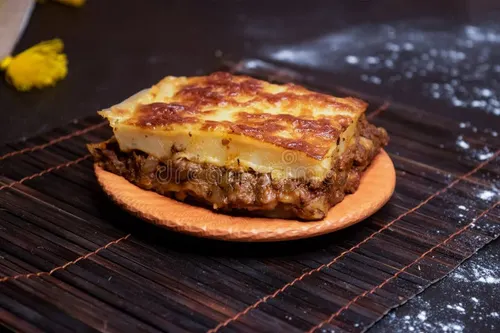

lasagna

lasagna recipes
Ingredients:
- 2 tbsp olive oil
- 1 onion (chopped)
- 2–3 garlic cloves (minced)
- 400 g ground beef or chicken (optional for non-veg)
- 2 cups mixed vegetables (zucchini, mushrooms, spinach, carrots)
- 2 cups tomato puree
- 2 tbsp tomato paste
- 1 tsp dried oregano
- 1 tsp dried basil
- Salt & pepper to taste
- 9–12 lasagna sheets
- 2 cups ricotta cheese (or cottage cheese)
- 2 cups shredded mozzarella cheese
- ½ cup grated Parmesan cheese
Steps:
- Heat olive oil, sauté onion and garlic.
- Add ground meat (if using) and cook until browned.
- Mix in vegetables, tomato puree, paste, and spices. Simmer 15–20 mins.
- Prepare ricotta mixture with cheese (optional).
- Layer sauce, pasta sheets, ricotta, mozzarella — repeat layers.
- Top with sauce, mozzarella, and Parmesan.
- Bake at 180°C (350°F) for 40–45 mins until golden and bubbly.
- Let it rest for 10 mins before serving.